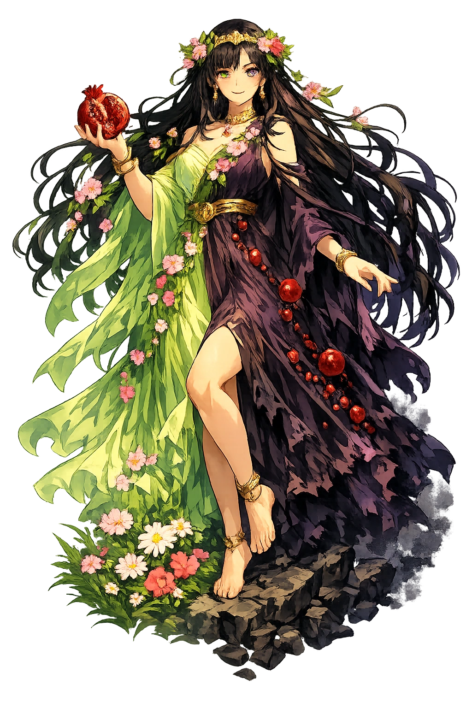

The Living Myth
Spring, Underworld, Vegetation · The Maiden · The Iron Queen

Stories of Persephonē
Persephonē's mythology is the Homeric Hymn to Demeter. Every later retelling is a variation on that poem's architecture of loss, grief, negotiation, and return.
In the Homeric Hymn to Demeter (1–90), Persephonē — Kore, the Maiden, daughter of Zeús and Dēmētēr — wanders a meadow on the Nysian plain gathering flowers: roses, crocuses, violets, iris, and the narcissus, 'a marvel, a glory to all, for the hundred-headed earth grew it as a snare' at Zeús's own command. The ground gapes; Hādēs bursts up in his golden chariot and carries her away screaming, and no god or mortal intervenes. The only witness is the sun himself, Hēlios, from whose all-seeing height the rape is visible — and Zeús, her father, had given her to his brother in secret. The hymn means the descent was not an accident but a design agreed in heaven: the maiden's fall into the dark was grief negotiated in advance, so that return — and with it the mystery — would be possible at all.
Dēmētēr searched nine days without food, drink, or bath, lighting torches from the fire of Etna, until on the tenth Hekátē — who had heard the cry — joined her, and the two together went to Hēlios, who 'sat in the bright air' and told them the whole truth (Homeric Hymn to Demeter 47–90). Then grief became cosmic policy. Disguised as an old woman, the goddess sat down at Eleusis, grieving; and when her daughter was not restored, she withheld her power and kept the seed hidden beneath the earth — famine unmade the human race, and with it the gods' sacrifices. Zeús was forced to send Hermês down to retrieve the girl. The hymn means that a mother's mourning has veto power over the entire economy of gods and men: grief, fully enacted, is a force of nature stronger than the thunderer's throne.
Behind the settlement stands one pomegranate. Before letting Persephonē go, Hādēs gave her a honey-sweet seed to eat — secretly, so that she would have to return — and the busy Ascalaphus, son of the river Acheron, saw it and told (Homeric Hymn 371–374; the full tale, with Demeter's vengeance, is Ovid's, Metamorphoses 5.533–550: she flung him beneath a rock, and when Heracles rolled it back, transformed him into the screech-owl). Rhea herself came down from Olympus to reconcile mother and daughter, and the settlement was carved: part of the year below with Hādēs, part above with Dēmētēr — later retellings count the seeds and therefore the months, but the law is fixed. The myth means that the constitution of the underworld is gastronomic: whatever is eaten there binds the eater. A single seed is enough to divide a life into seasons, and a goddess into two.
Persephonē does not come back unchanged, and the tradition knows it. In the underworld she is basilissa, the queen enthroned beside Hādēs — the Hymn (365ff.) has her 'majestic' at her husband's side, the only Olympian who rules below — while the epic form of her name, Persephoneia, carries the longer, darker vowels of the lower world. The mystery religions read the whole myth as their charter: at Eleusis, initiates reenacted the descent and return, and were promised that what happened to the goddess could happen to them. In the Orphic gold leaves, the dead declare themselves children of Earth and starry Heaven and drink from Memory's spring under her jurisdiction. The myth means the abduction was secretly an initiation: the queen of the dead rules because she has been down and come back, and every initiate's hope was to wear her crown for a little while.
Spring, the Underworld, Vegetation, and Initiation
Persephonē is the only Greek deity who is fully at home in two worlds. For half the year she is the maiden Kore, daughter of Dēmētēr and goddess of spring; for the other half she is the dread queen of the dead, Hādēs's wife. Her double life is the Greek explanation for everything that dies and returns.
Her ascent from the underworld brings the grain and flowers of spring; her return is the return of life.
In the underworld she sits beside Hādēs and rules the shades with a power no other Olympian has below.
The sprouting seed is her; the buried grain is her; the mystery of Eleusis centers on her journey.
Initiates at Eleusis reenact her descent and return, hoping for the same promise in death.
From the original script to the living URL
Περσεφόνη
The name in its original Greek form. Persephonē (Περσεφόνη) is attested in the source tradition — “She who destroys the light (possibly)”. Its aspirated consonants, long vowels, and acute accents carry the full phonetic and orthographic weight of the source tradition.
persephone
Reduced to plain persephone, the name loses everything that made it specific: aspirated consonants, long vowels, and acute accents. What remains is an ASCII string that machines can parse but that no longer speaks with its original voice.
Persephonē
The Unicode restoration recovers what ASCII flattened. Persephonē restores aspirated consonants, long vowels, and acute accents, returning the name to its original written dignity. The domain encodes to Punycode, but the browser displays the truth.
Persephonē.com → xn--persephon-jhb.com
The non-ASCII characters in Persephonē are encoded while the ASCII remains visible. To the DNS, it is Punycode. To humanity, it is Persephonē.
Owned, ideal, and ASCII forms of Persephonē
Persephonē
Restores Περσεφόνη. The live temple domain — persephonē.com.
Persephónē
Restores Περσεφόνη. Acute on the stressed short vowel, matching Greek Περσεφόνη; preserves stress where the canonical macron-only form records length only.. Not in the PuniCodex collection.
persephone
Flattens Περσεφόνη. The plain ASCII fallback — what DNS and legacy systems see.
How Persephonē was spoken
How Persephonē travels from ancient script to the modern URL
Greek Περσεφόνη; etymology debated; possibly pre-Greek, with folk-etymologies connecting it with φόνος “murder" or φέρειν “to bring".
Spring, Underworld, Vegetation
The Unicode restoration Persephonē preserves Greek stress and length; the ASCII form persephone loses these features.
Persephonē is the only Greek god who must live in two places. She is not half-dead; she is fully alive in both realms. That is the terror and the promise of her myth: death is not a wall but a season. The grain goes under the earth and comes back; the girl goes under the earth and comes back. The pattern is the same.
Enter Extended Lore